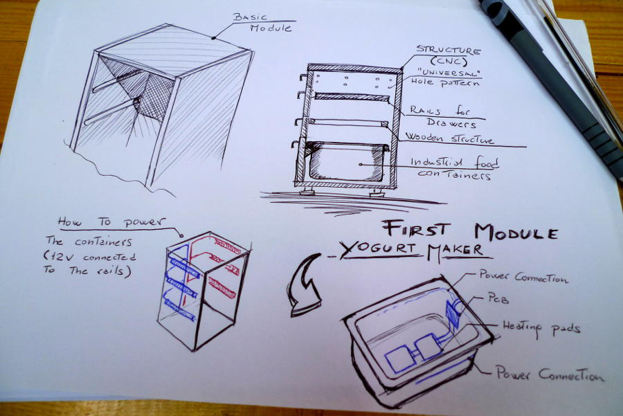
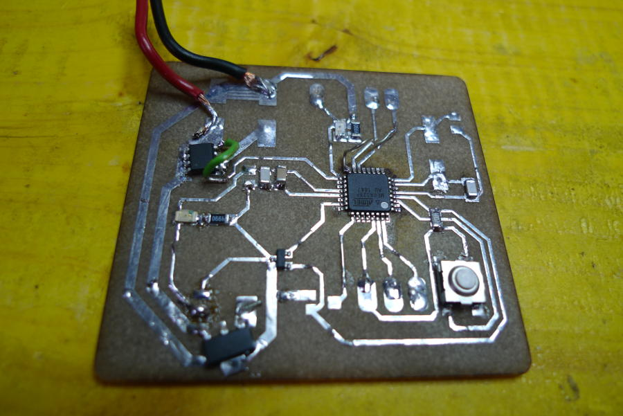
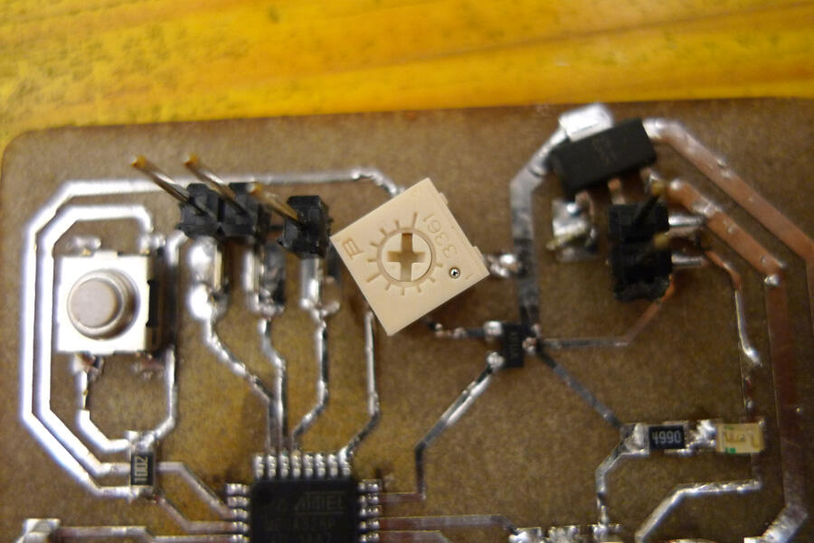
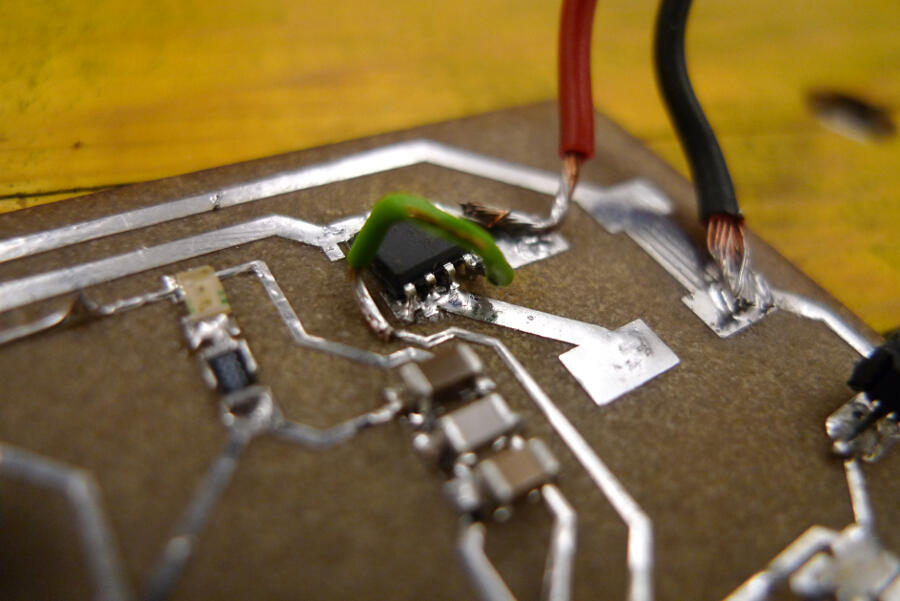
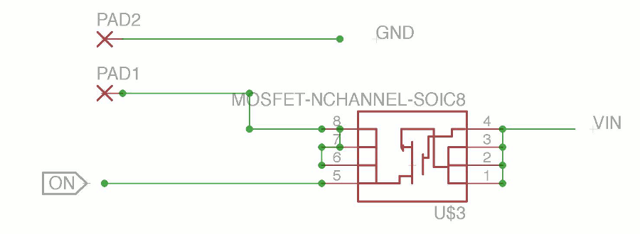
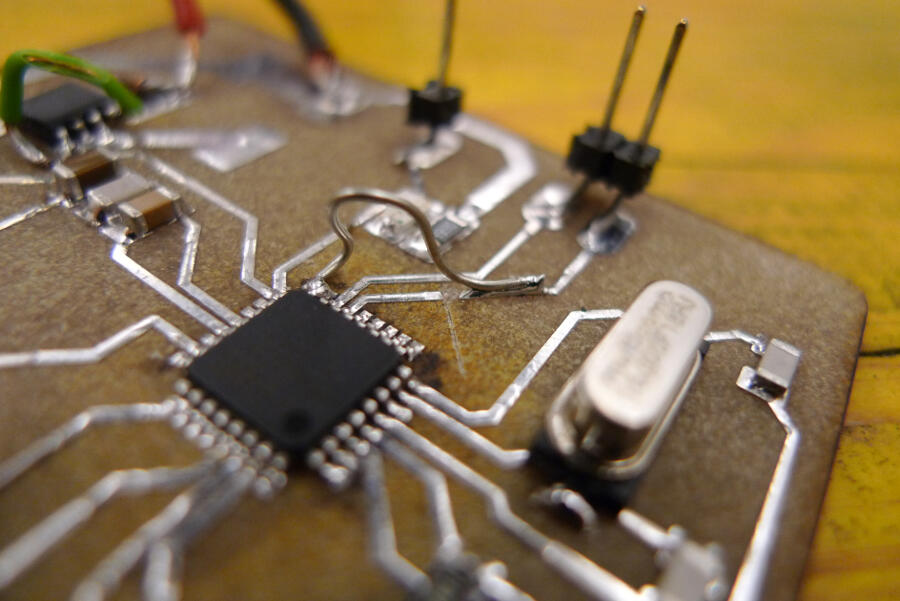

10. Input Devices
Project
In Opendot we have three different user groups, one of there is focused on food (from cooking to events). During the next two weeks I'll try to design the electronic board for a yogurt maker.
The project we are developing in the user group is the "universal kitchen cabinet", designed to be digitally fabricated and fully customizable. Each drawer has a different funcion based on the interest of the user, for instance it could keep a certain temperature to rise the dough, make yougurt, it could water sprouts or it could dry fruits and vegetables. WE decided to start with the yougurt maker.
Here a sketch that describe it

Components
The main component are these:
- Microcontroller
- Termistor
- Trigger
- Tension regolator
- Mosfet
- Heating pads
Part Value Device Package Library Sheet C1 22pF 0612ZC225MAT2A CAPC3216X178N AVX_By_element14_Batch_1 1 C2 22pF 0612ZC225MAT2A CAPC3216X178N AVX_By_element14_Batch_1 1 C3 10uF CAP1206 1206 01_SparkFun 1 C4 1uF CAP1206 1206 01_SparkFun 1 C5 100pF CAP1206 1206 01_SparkFun 1 CRYSTAL 16Mhz CSM-7X-DU CSM-7X-DU 01_FAB_Hello 1 IC1 LM50 LM50 SOT23 linear 1 IC2 5V V_REG_78XXSIDE 78XXL 01_SparkFun 1 LED_13 RED LED1206 1206 01_FAB_Hello 1 LED_PWR GREEN LED1206 1206 01_FAB_Hello 1 MICRO ATMEGA328P-AU ATMEGA48/88/168-AU TQFP32-08 atmega8 1 R1 10k RESISTOR1206 1206 01_SparkFun 1 R2 499 RESISTOR1206 1206 01_SparkFun 1 R3 499 RESISTOR1206 1206 01_SparkFun 1 R4 10k TRIM_US-SM-42/43X SM-42/43X pot 1 SWITCH 6MM_SWITCH6MM_SWITCH 6MM_SWITCH 01_FAB_Hello 1 MOSFET NCHANNEL-SOIC8 MOSFET-NCHANNEL-SOIC8 SO08 01_SparkFun 1Being designed to be integrated in an object the idea was to have temporary connections to MOSI, MISO, SCK, Reset, Tx and Rx just to programm and debug it. After this alle the connection should be removed. The power supply will be soldered as well.
The only extra components not listed in the BOM are the pins for the connections (because they' are temporary), the power supply (12V - min 1,5A), and the heated pads (I used a 10W pads).
First test
The first board wasn't particularly optimized and I made a lot of mistakes.
Here the eagle file:
Debugging
This is the first version of the board after the debugging

Let's check all the mistakes done:
1. Trigger package

I picked up the wrong package of the trigger, so to be able to test it I had to rotate it and bend a little bit the connections. In the end it worked like this.
2. Current regulator vs. Tension regulator
 I bought by mistake a current regulator instead of a tension regulator. In the schematic It was connected in a different way, so when I pluged in the board it became so warm that it melted the solder. After that I double checked the datasheet and I realized I switched GND and VOut.
I bought by mistake a current regulator instead of a tension regulator. In the schematic It was connected in a different way, so when I pluged in the board it became so warm that it melted the solder. After that I double checked the datasheet and I realized I switched GND and VOut.
To this point I haven't noticed yet it was the wrong component, so I went on to trying to fix it. I rotate it untill the GND get to the back part of the component (also connected to the ground) and the VOut to a place where it was easy to bridge it to the proper connector. At this point I tested the output with the multimeter, the result was 8V, enough to fry the microcontroller. I decide to go on to complete the debug, so i used a couple of temporary connectors to power properly the board.
3. Mosfet

After soldering the mosfet I tested the connections and I noticed there was something wrong, it seemed a shortcircuit. Double checking the scheatic I realized I connected it completely wrong.

So, I desoldered it and moved to keep the Gate not connected to anything. After that I bridged it to the right pin.
3. MISO

While i was plugging the board to try to programm it I realize I connected in the schematic the wrong pin to the MISO. So I had to cut the trace and bridged it to the right pin.
Beside the debugging, when i tryed to connect it and programm it, the arduino IDE gave me the message that it was impossible to upload the code. So i decide to fix all the mistakes in the schematic and make a V2.
I also realize it's a bad idea to buy components at 3.40 a.m. and design electronics boards during the night.